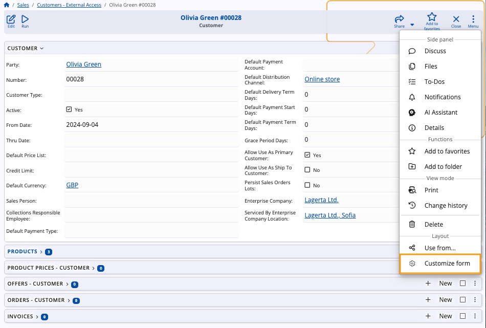
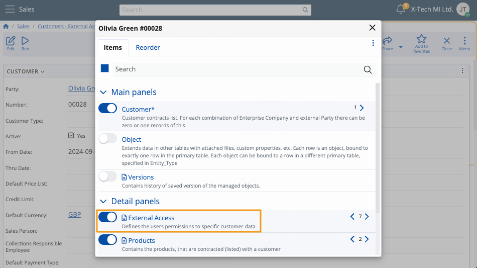
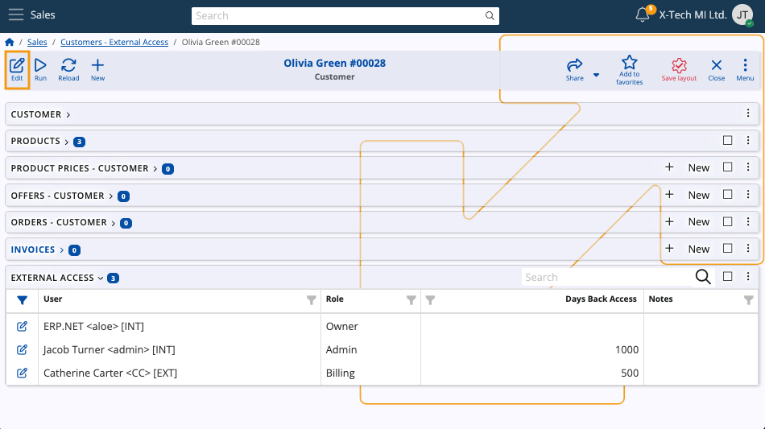
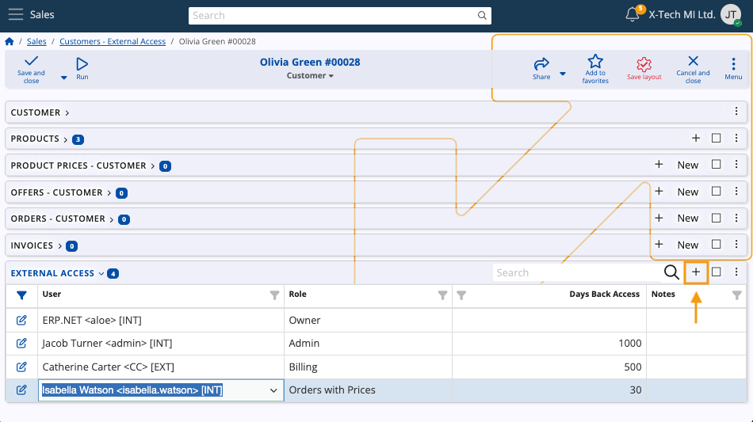
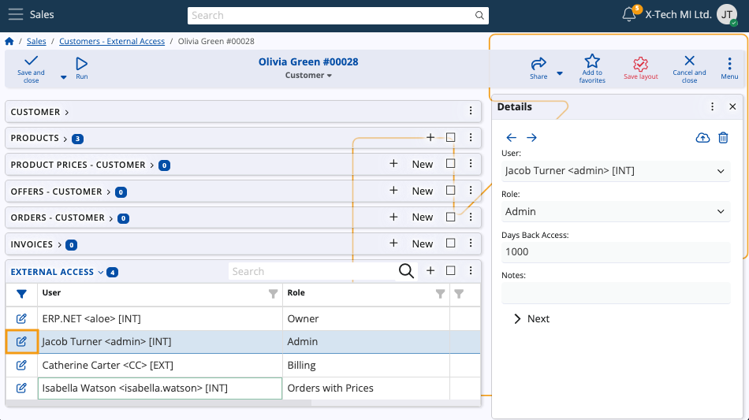
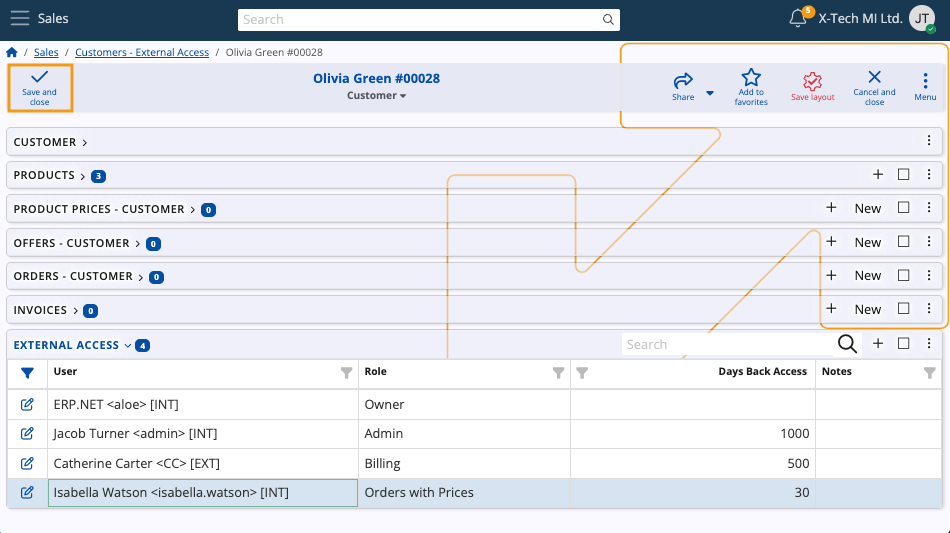

External Access
The Customers - External Access table lists all users who have access to specific Customers in the Client Center. It offers a way of setting up new users and defining their access for different customers in the Client Center.

Interface
The table consists of the following columns:
Customer - The customer whose data is accessible to the user.
User - The user account to whom the access is granted.
Role - The external access role of the user, which defines the level of granted access.
Days Back Access - The maximum number of past days the user is allowed to view data (e.g. sales order records).
If left empty, it assumes unlimited.
Notes - Optional notes for the external access.
Roles
A user can have one of 6 different roles for external customer access.
Each subsequent role in the list below also includes the rights granted by the previous.
- L10 - Basic - Provides basic access.
- L20 - Orders - Grants access to sales orders, excluding Price, Discount and Amount.
- L30 - Orders with Prices - Provides access to sales orders and all of their details.
- L40 - Billing - Gives access to billing-related documents, such as due payments, invoices and payment history.
- L80 - Admin - Ensures full access to all customer data.
- L90 - Owner - The same as Admin. Once assigned, Owner access cannot be revoked by anyone, including Admins.
Note
A tabular breakdown of external access roles can be found in the Client Center documentation.
Grant and edit access
The External Access table allows you to define new users, as well as modify and remove existing ones.
To do so:
Select a customer from the navigator and reveal the Customize form feature of the main customer form.

Reveal the External Access panel.

Click the Edit button of the form to enable editing within the External Access panel.

To add a new user for the customer, click the + button and fill out the respective fields.

To change the details of an existing user, simply click the pen button to the left of their name and proceed to insert your edits.

Clicking Save and close will apply all changes and/or additions for the customer.

To enable multi-customer login in the Client Center for the same user, repeat all steps above for another customer of your choice.
Tip
The Client Center also allows you to add users to the External Access table and manage their access level.
The process is described in the following guide.
Note
The screenshots taken for this article are from v26 of the platform.